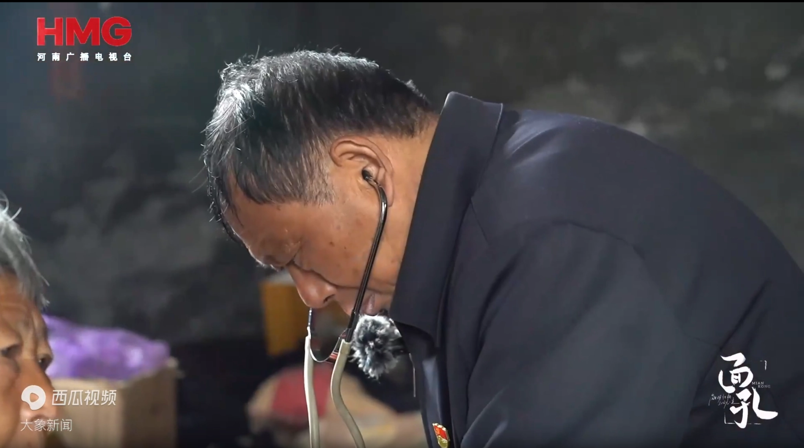

画面大巴正在行驶。王下放想下车，阿康起身一把拽住他。
阿康你把钱都贴给山里那些人了，自己吃啥喝啥？下放，你到底图什么？
字幕 / 独白我到底图什么。
镜头 / 剪辑近景 + 手持，制造拉扯感；字幕在两人沉默之间打出。
Never Let Go
他本可以离开大山，却在一通深夜求诊电话后下车，从此再没离开寨豁乡。 用一生把“下放”走成了“守护”。

画面大巴正在行驶。王下放想下车，阿康起身一把拽住他。
阿康你把钱都贴给山里那些人了，自己吃啥喝啥？下放，你到底图什么？
字幕 / 独白我到底图什么。
镜头 / 剪辑近景 + 手持，制造拉扯感；字幕在两人沉默之间打出。
画面寨豁乡有许多留守老人。王下放坐在老人床旁，打开药箱，拿出听诊器，放到老人胸口。 老人卧床，下肢虚搭在胸腔两旁，一只手颤颤巍巍伸出食指，指了指自己的胸部。
王下放大爷，你哪儿不舒服？
老人王大夫，我心口闷。
王下放心口闷就别平躺，侧着躺，会好受些。
老人王大夫，下回不用往这儿跑了。
王下放为啥？
老人我没钱看病了……
王下放没事，没几个钱，我给你出。
字幕 / 独白我每天都要上山看看他们。
镜头 / 剪辑固定低机位，药箱、听诊器、老人手指特写；台词尽量轻，不要煽情。
画面王下放从集市买好几袋大米和几瓶油，放进摩托车后备箱。 叠影切：他开摩托上山，山路碎石、坑洼，车把在手里发麻。快到时，看到大爷站在家门口等他。 他停车，拿出大米和油递给大爷。再叠影切：看诊时，脚边不只有药箱，还有菜和肉。 老奶奶腿上放着一袋透明塑料袋装的米，手摸着米，眼睛湿润。
老奶奶没有你，我们真不行。
字幕 / 独白 不知道什么时候开始，每次赶集，油和米，总是多买了点。每天都要上山，那就多带一点东西吧。
镜头 / 剪辑叠影切、重复动作蒙太奇；用“多买一点”作为视觉母题。
画面菜摊老板把菜装进塑料袋，举着手递给王下放。王下放低头打开钱包，钱包里只有几个硬币。 切：他站在家中院子里，拨通备注“翔哥”的电话，语气殷勤热络。 切：村口路面不平，他骑得太快，过弯时前轮碾到松动的石头，整个人带车翻出去。 切：他推着车回到诊所，看到昔日同窗阿康。阿康看样子在城里混得不错。
菜市场老板一共六块五。
王下放喂？翔哥～
翔哥下放，你什么时候还钱？
阿康矣！下放！可算见着你了！
字幕 / 独白钱越来越不够用了。
镜头 / 剪辑钱包硬币特写；电话只留声音；摔车用突然切黑或晃动镜头。
画面阿康在床边凳子上坐下，看着王下放坐在床上，伸着腿给腿上伤口消毒。
阿康你这腿，自己包？
王下放不然呢。
阿康你这日子还过得下去？钱借不到，腿也摔了，天天跑山路，你这摩托还能撑多久？
阿康上回跟你说的那事，你想过没有。
王下放哪件？
阿康跟我走，厂里缺人，工资高，包吃住。
阿康你在山里能挣几个钱？你自己算过没？
王下放没算过。
阿康你每个月自己贴进去的药钱，比你吃饭的钱还多吧？
阿康你爸一辈子都在给山里人看病，你也要跟他一样？
阿康下放，你也该替自己想想了。后天晚上，村口有车。来不来，你自己定。
镜头 / 剪辑缠纱布的手停顿一下，但不要抬头；阿康站起时凳脚摩擦地面，作为决定前的噪音。
画面村口，阿康站在大巴旁，把抽完的烟丢到地上，用脚踩灭，转头看到王下放来，咧开嘴笑。 王下放坐上大巴，阿康在旁边。王下放低头，右手放在胸口。电话铃声响，他立刻把手机从胸口口袋拿出来接电话。
阿康下放，你可算来啦！
爷爷王大夫，我胸口闷得慌。
王下放好，我这就过来。
字幕 / 独白他们还不知道我已经离开。我也不忍心告诉他们。
画面切回场1大巴画面。阿康拽住王下放。
阿康你图啥呢？
王下放我就图只要他们身体好，我就高兴了。
画面阿康听到认真的语气，拽住他的手慢慢松开。王下放下车，远处有一辆往山里开的轿车， 他向着车来的方向跑去，疯狂挥手。远光灯照得晃眼。
王下放停车！停车！停车！
字幕 / 独白那以后，我再也没离开过寨豁乡。
镜头 / 剪辑远光灯白光闪满画面——王下放生平事迹报道视频渐显。
王下放，太行山里的一位乡村医生。
行医 47 年，累计出诊 7 万人次。
总里程超过 75 万公里，相当于绕地球近 19 圈。
服务寨豁乡 95 个自然村。
骑坏 8 辆摩托车。